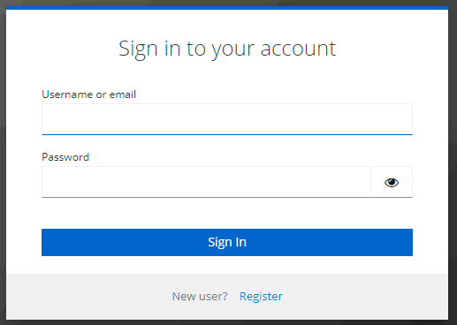
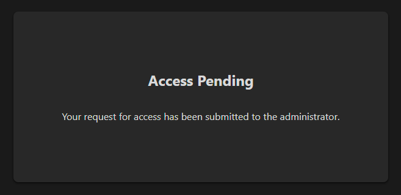
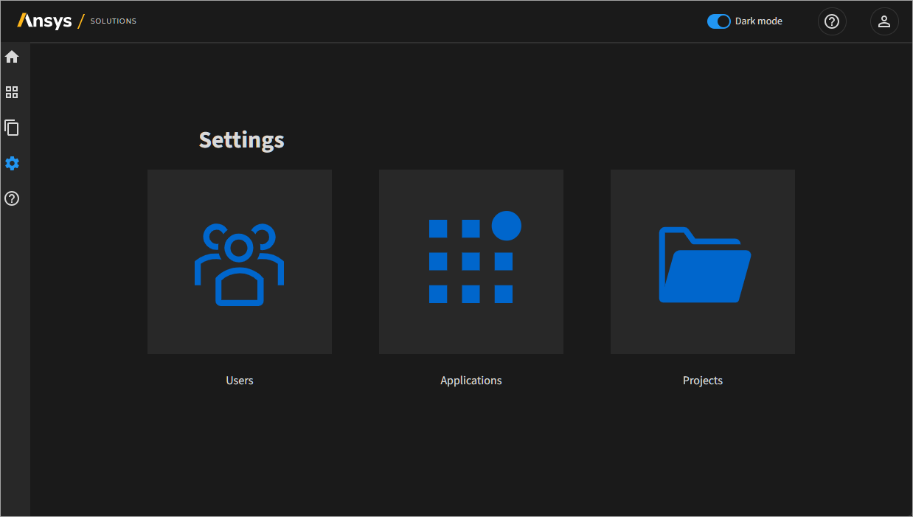
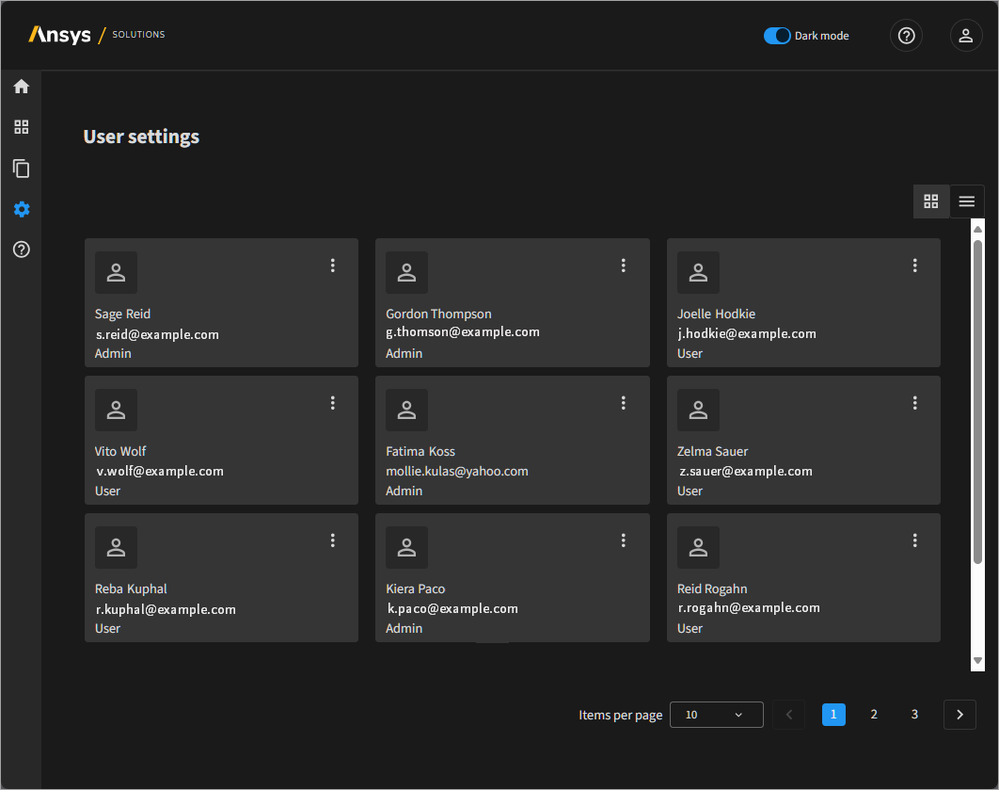
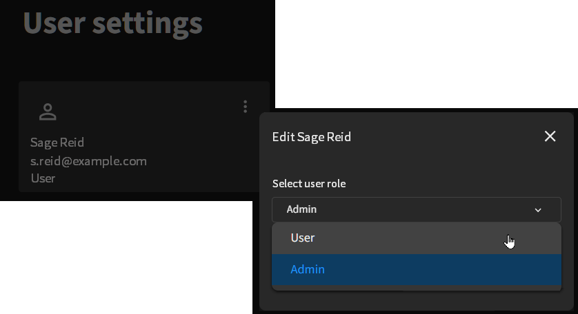

Add users#
To work with solution apps and projects on the platform, a new user must first register as a platform user and then receive administrative approval as an Ansys App Portal user. This section provides instructions for each step of this process.
Register as a new user#
A new user should perform these steps to request access to the platform.
Open the Ansys App Portal at http://portal.local.se.
Click Sign in with Keycloak OICD.
On the Sign in to your account dialog, click Register.
On the registration form, fill in the requested information.
Note
The email address must have the email domain specified in by the
OP_EMAIL_DOMAINthe environment variable in the.envfile.Click Register.
On successful registration, the user is redirected to the following message on the Ansys App Portal. At this point, the user must wait until the registration request is approved by the portal administrator.
The user may log out at this time.
{kind=link}
Approve the user registration#
A portal administrator should perform these steps to approve the new user registration and provide access to the portal.
Open the Ansys App Portal at http://portal.local.se.
Click Sign in with Keycloak OICD.
Sign in with portal administrator credentials.
The Ansys App Portal opens to its Home page.
Click Settings in the navigation tree.
The Settings page opens.
Click Users.
The User settings dashboard opens.
On the card for the user to be approved, click the menu and select Edit user.
The Edit dialog opens.
For Select user role, select an option:
Admin: Users with this role can add solution apps and approve registrations/assign roles for new portal users.
User: Users with this role can access applications and execute projects.

Click Update user.
{kind=link}
{kind=link}
{kind=link}
The registration is approved and the new user is added as a portal user with the specified user role.
Verify user approval#
The new user should perform these steps to verify that the registration has been approved.
Open theAnsys App Portal at http://portal.local.se.
Click Sign in with Keycloak OICD.
The Ansys App Portal opens to its Home page if the registration has been approved by the portal administrator.
{kind=link}